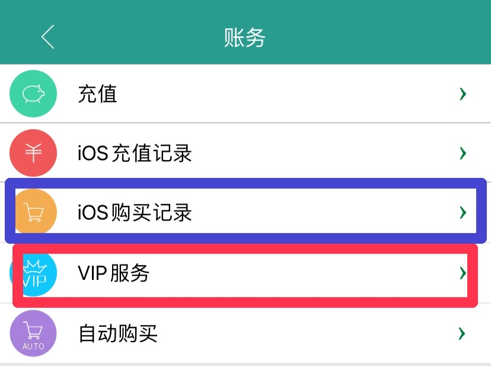
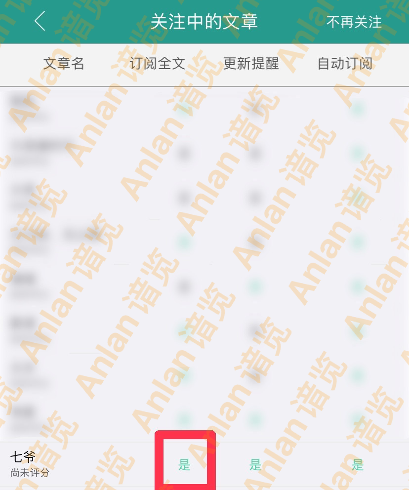
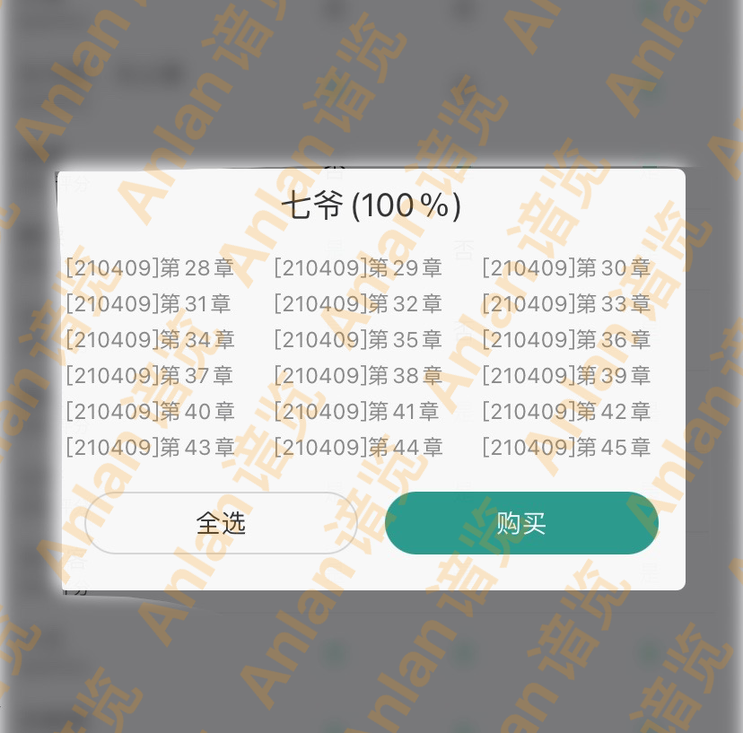
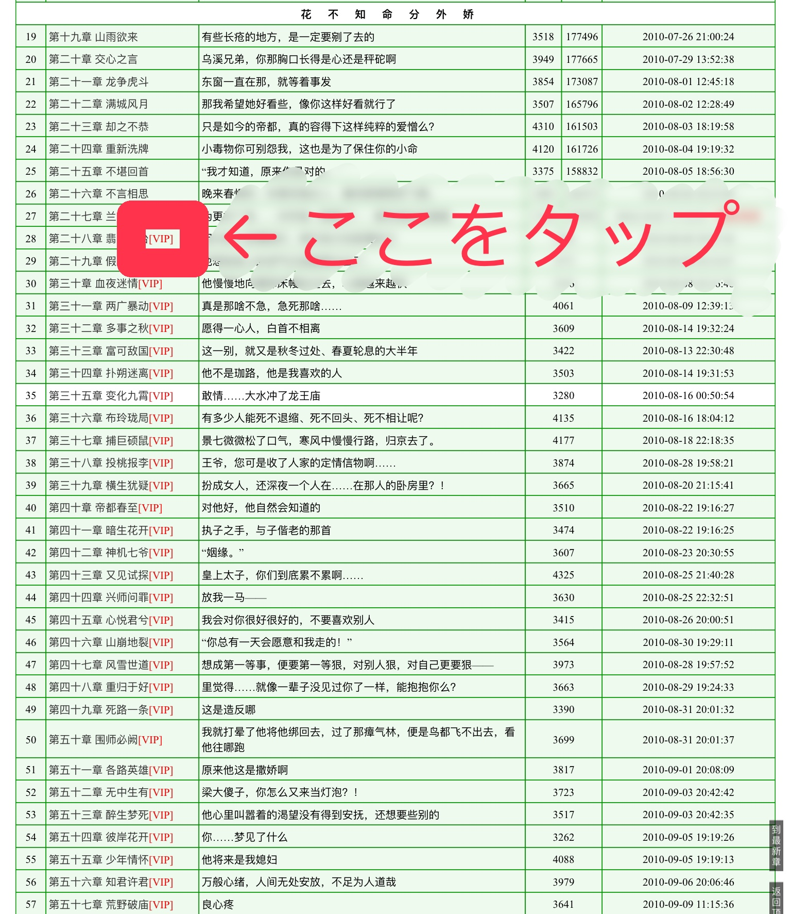
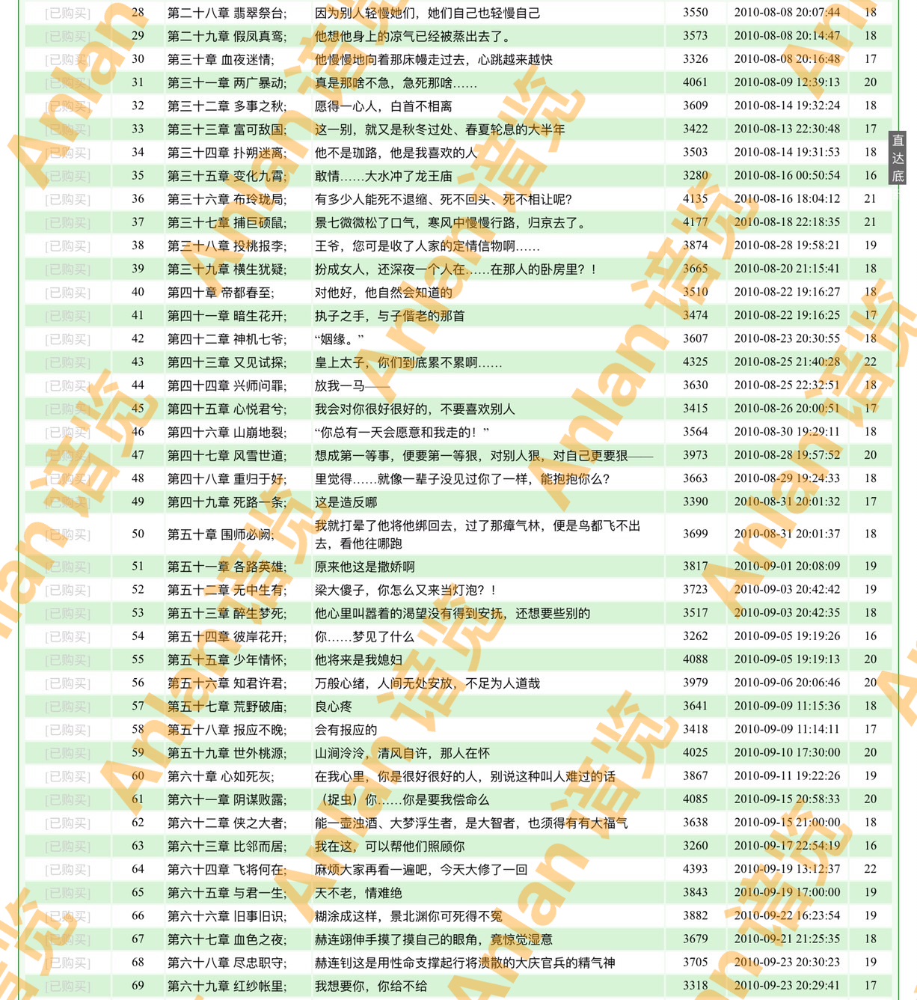
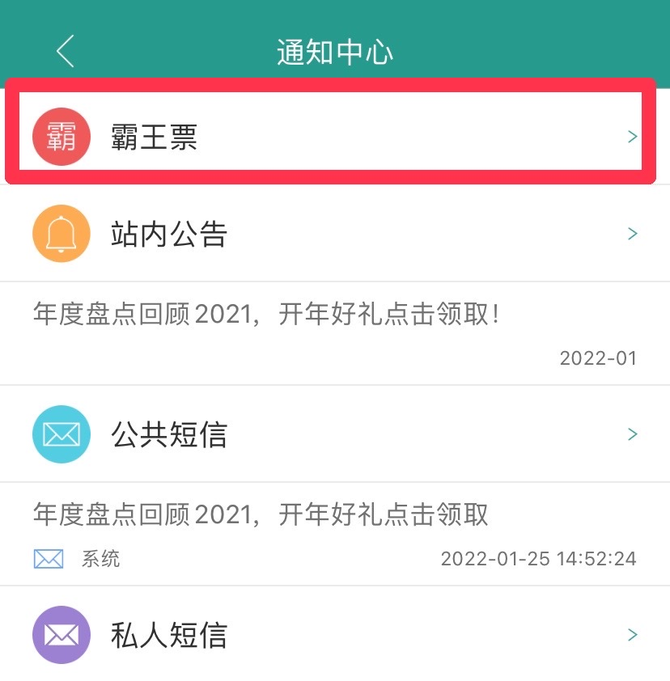
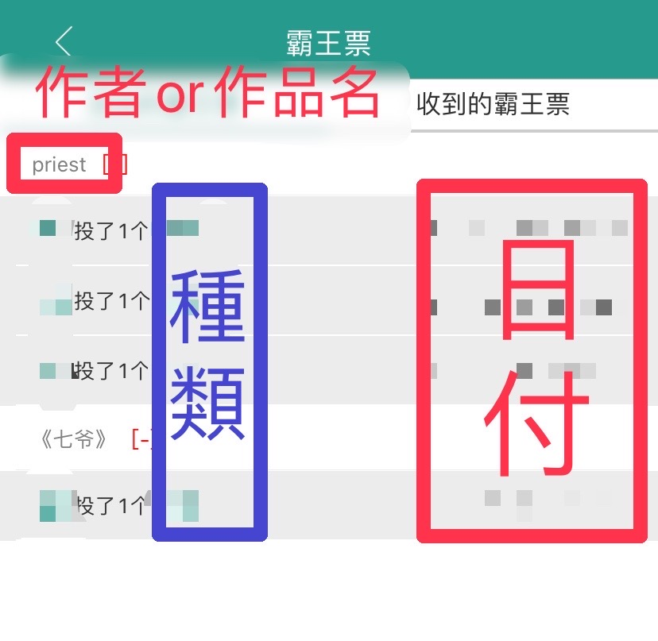
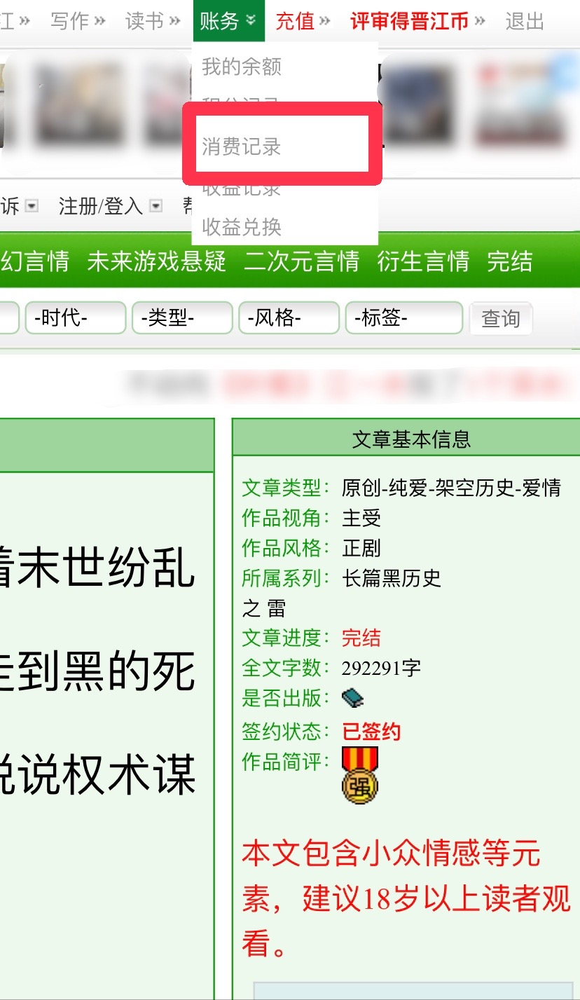
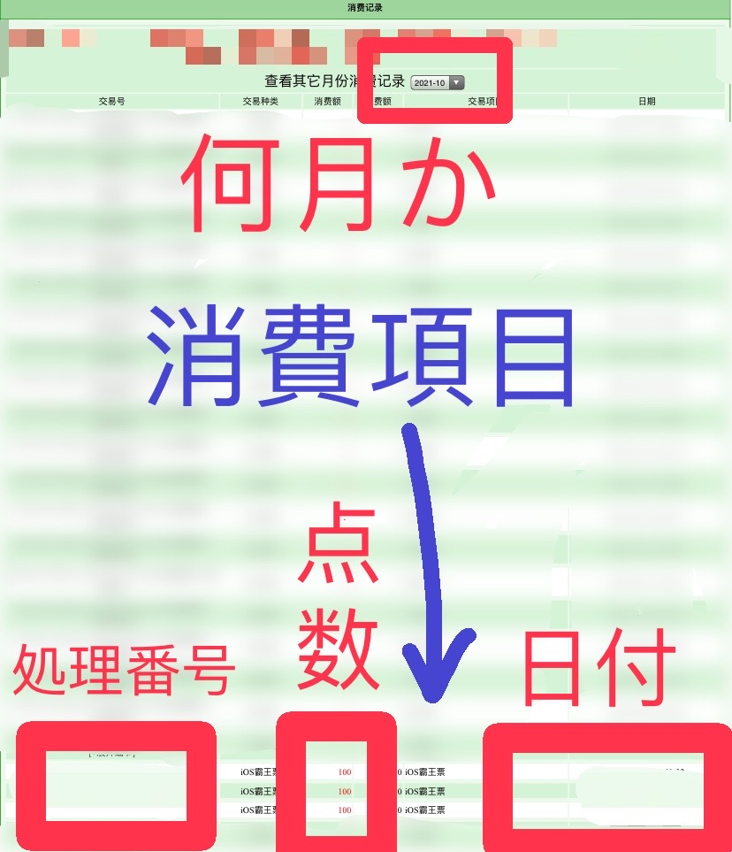

晋江文学城での
作品購入・地雷投下履歴の
表示方法
- 作品購入履歴
- 1-1. アプリで表示
- 1-2. web版で表示
- 地雷投下履歴
- 2-1. アプリで表示
- 2-2. web版で表示
1.作品購入履歴
1-1.アプリで表示

1.右上の人型👤マークをタップ→「VIP服务」を選択

2.購入した文章の「订阅全文」の列にある「是」または「否」をタップ

3.購入可能な章の全てを購入済の場合は〜%の画面のスクリーンショットのみでOK
その他の場合は該当章が画面に入ったスクリーンショットを撮ってください。
2.web版で表示

1.作品ページを開き、任意の[VIP]マークをタップ

2.「已购买」の文字が見えるようにして、該当章が画面に入ったスクリーンショット/写真を撮ってください。
2.地雷投下履歴
2-1.アプリで表示

1.右上の人型👤マークをタップ→「🔔通知」→「霸王票」を選択

2.「＋」をタップ→作者or作品、日付、霸王票の種類（地雷etc）が見えるようにして、スクリーンショットを撮ってください。
2-2.web版で表示
web版での履歴を必要とする場合は、地雷投下方法でご説明した通り投下の際の写真も共にご用意ください。

1.右上の「账务」をタップ、「消费记录」を選択

2.処理番号、点数、消費項目、日付が見えるようにして、スクリーンショット/写真を撮ってください。
晋江文学城での作品購入・地雷投下履歴の表示方法は以上となります。
ここまでお読み頂きありがとうございました。